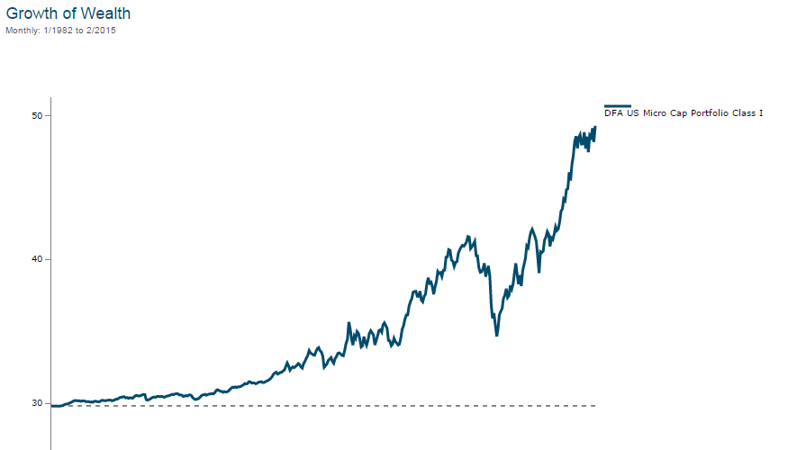
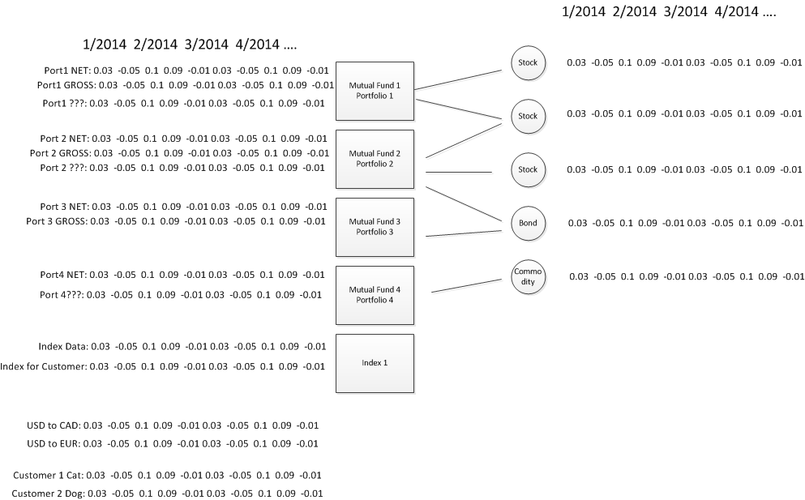
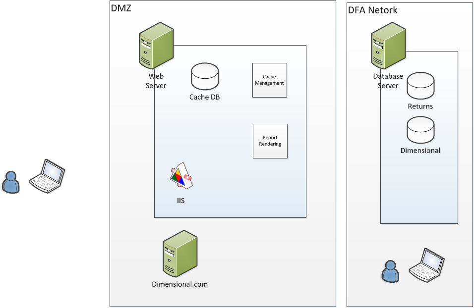
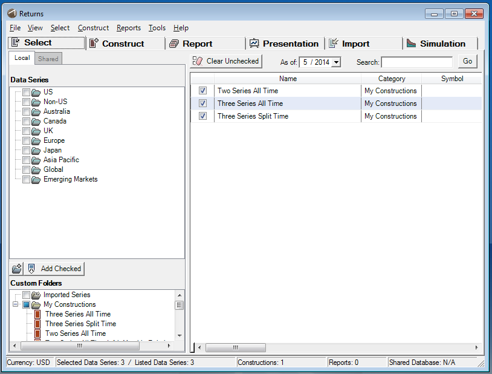

Returns Web
Dimensional Fund Advisors
Users : Advisors
Financial Experts that Sell Dimensional Funds
Goal
Answers: How did our funds perform?
Sample Report
Sample Report

Web Application
- Tablet and Desktop (Phones are out)
- Hosted in the Cloud
Data Crash Course
Definitions
- Portfolio / Mutual Fund : Holds investment vehicles (stocks, bonds, etc.).
- Index : Performance Standard
- Returns Series : A name and list of percentages per month.
Physical Layout
Demo
Methodologies
- Onion Architecture
- Code Reviews
- TDD / Test First
Backend Technologies
- Atlassian Stash (GIT)
- SQL 2008
- NService Bus
- XUnit.net
- Web Api 4
- Dapper
- Structure Map
Frontend Technologies
- React.js
- SignalR
Code Demo
Dev Process
- JIRA
- Daily Standups
- Customer Reviews
Getting You Working
- Restricted to DFA Machines Only
Short Term Needs
- Automated Deployment
- Lacking Domain
- Front End Automated Testing
Larger Needs
- Packages
- Periodicity
- Constructions
- Regressions
- Data Series Upload
- Report Rendering System Integration
History
CEO's Value Project
ReturnsW

ReturnsW
- Created: 199x
- CEO Likes and Still Uses
- Visual Basic 5.0
Returns 2.0
Returns 2.0
- Created: 200x
- CEO Likes A LOT Less
- .NET 2.0
- Desktop / MS-Access
Returns Lite

Returns Lite
- Completed 2014
- Web Based Product
- Built as a Prototype
- First Attempt at TRUE Public Web Application